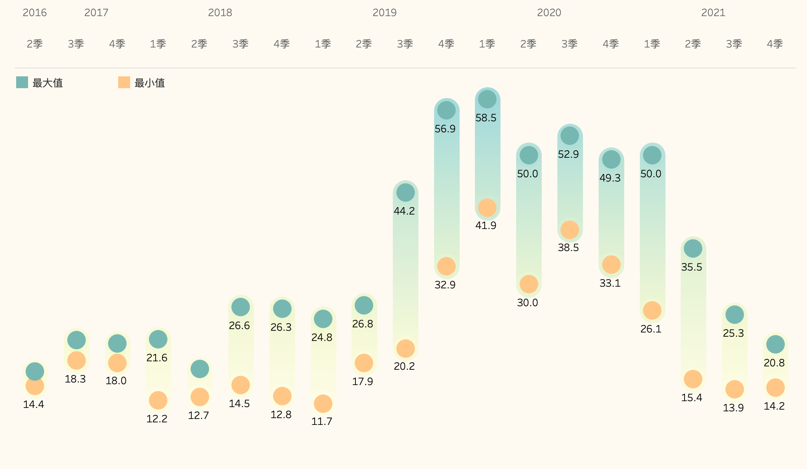
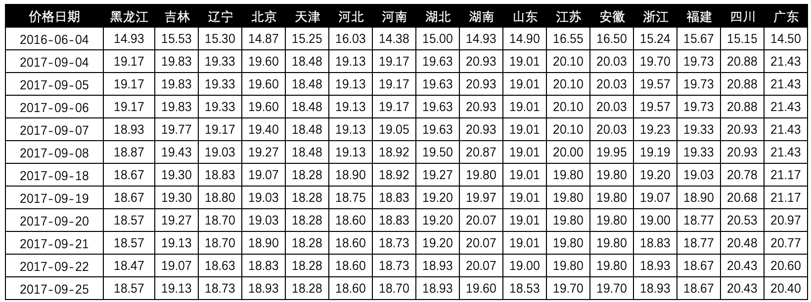
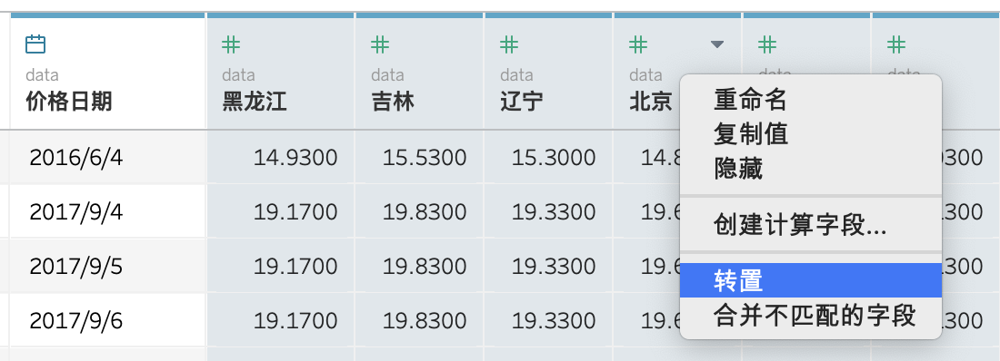
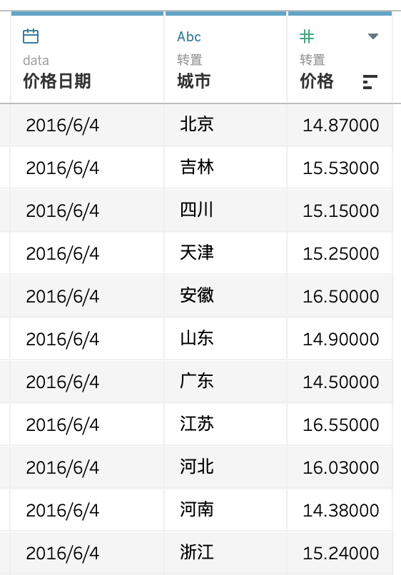
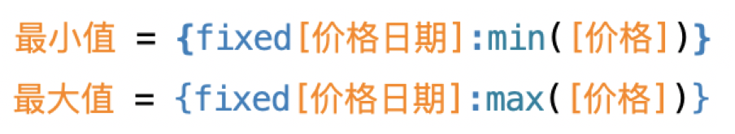
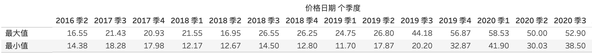
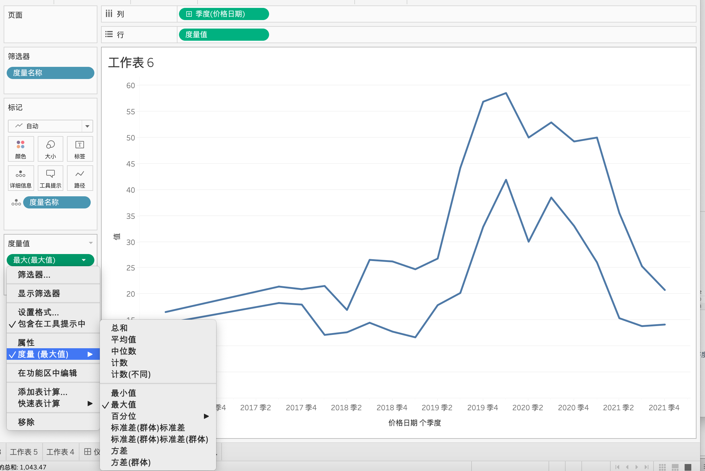
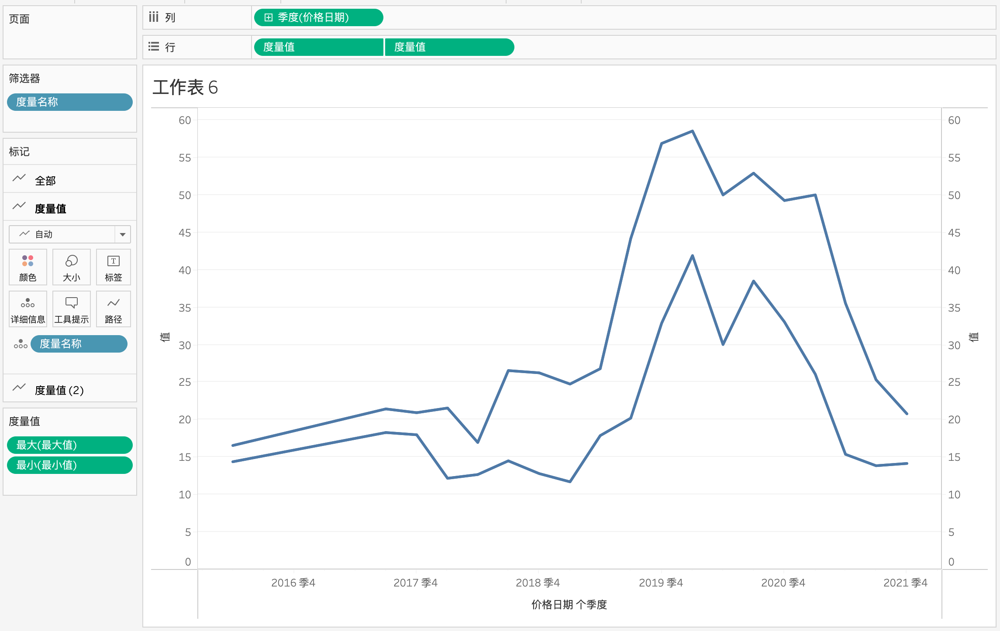
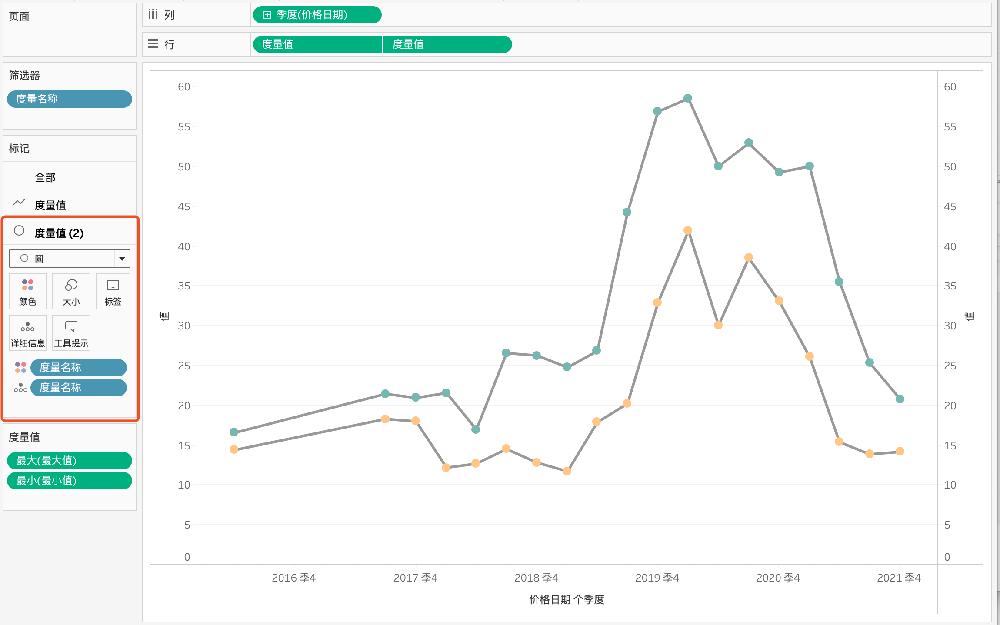
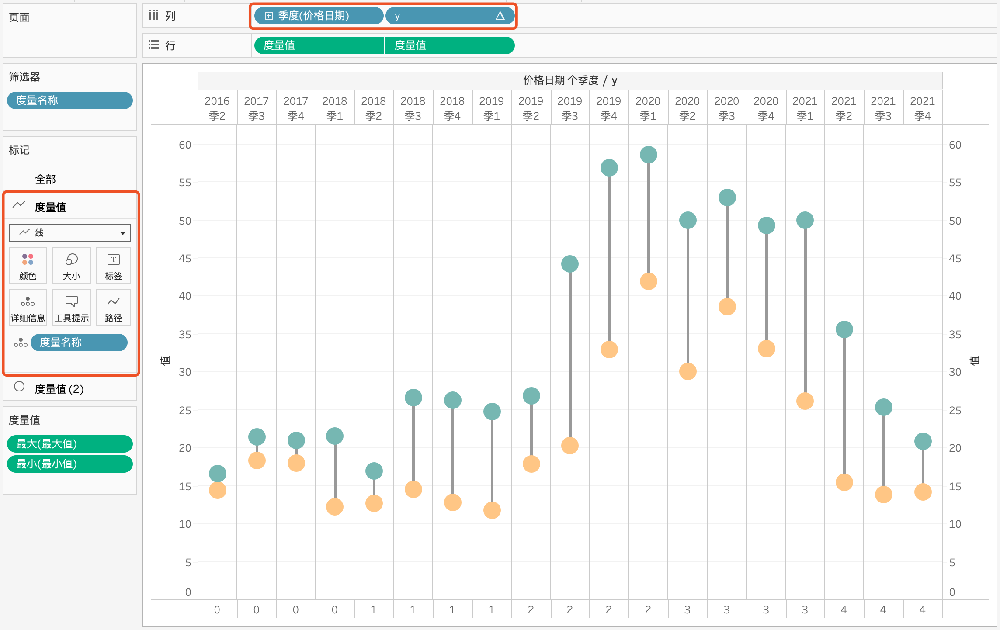

从练习中看到下图，觉得是个很好的展示图表。每个统计日不仅显示最大值和最小值，还会用线段进行连接，结合颜色的突出，比单纯展示最大值和最小值更直观更美观。
在度娘上找了很久也没有找到如何操作，无奈只能自己摸索。

数据准备
获得的原数据格式如下：

研究了很久，这种多度量的数据格式在处理和分析时不是很友好，所以需要进行转置处理。将原数据导入后，在Tableau的数据源选择度量列，右键选择“转置”。

转置后得到我们想要的数据格式：

实现过程
创建最大值和最小值字段：

这样我们就得到了视图下的最大值和最小值：

再建立一个字段 y，用于连接最大值和最小值。

所有相关字段就已经创建完成了，下面是制图过程。首先，将价格日期拖入列，选择合适的粒度。再将度量值拖入行，去掉无关的变量，只保留最大值和最小值两个，最大值的度量选择「最大值」，最小值的度量选择「最小值」。

将度量值的绿色胶囊复制一份，在复制得到的绿色胶囊右键选择「双轴」和「同步轴」

将其中一个度量值的类型选择「圆」，度量名称用「颜色」标记。

另一个度量值标记类型改为「线」。将 y 拖入列，位于「价格日期」后面，将「价格日期」和「y」的类型均改为离散。

然后对图表进行美化，调整线的大小和颜色，去掉相关的辅助线，添加背景色即可。